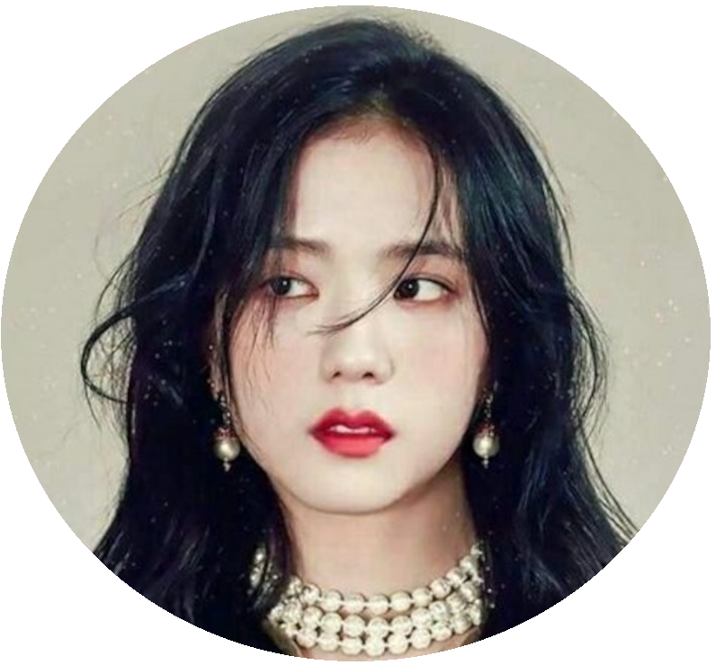
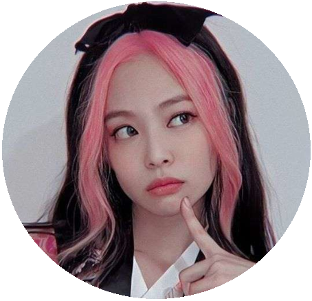

Lisa
Nascida na Tailândia, em 27 de março de 1997, Ela era a única pessoa que foi reconhecida na audiência YG Entertainment na Tailândia, em 2010, onde chegou em primeiro lugar no ranking. Ela se juntou a agência em abril de 2011. Ela estava em um grupo de dança chamado We Zaa Cool com BamBam de Got7. Ela colabora com a marca de roupa Nonagon desde 2014, ao lado B.I e Bobby do grupo IKON.Há pouco mais de uma semana, Lisa, mais conhecida como uma das quatro integrantes do grupo feminino internacionalmente querido Blackpink, finalmente fez carreira solo com seu primeiro single solo, “Lalisa”. A música se tornou um sucesso de vendas em seu país natal. “Lalisa” chega como o videoclipe mais visto do mundo nesta semana, batendo o segundo clipe várias vezes. Na Coreia do Sul, onde ela é um nome familiar, o primeiro sucesso solo de Lisa domina as paradas do YouTube, superando todos os outros títulos por uma margem considerável.
Jisoo
Jisoo, também conhecida como Kim Ji Soo, é uma das integrantes mais antigas do BLACKPINK, pois foi a primeira a ser selecionada para a banda feminina. A bela, que interpreta a ‘irmã mais velha’ de suas companheiras de banda, nasceu e foi criada na Coréia do Sul e treinou por 6 anos com a YG Entertainment antes de sua grande estreia. Não se deixe enganar por sua estrutura pequena, Jisoo pode tocar bateria além do piano. Ela também é uma estrela que nunca chora no palco ou mesmo na presença de seus companheiros de banda, simplesmente porque não gosta de fazer isso na frente das câmeras. Conheça os principais fatos sobre Jisoo!
Jennie Kim
Jennie Kim , mais conhecida como Jennie , é uma cantora, dançarina, rapper e modelo sul-coreana. Ela é integrante do grupo sul-coreano BLACKPINK formado pela YG Entertainment em 2016. Jennie nasceu na Anyang em 16 de janeiro de 1996. Durante sua infância viveu em Auckland, Nova Zelândia e estudou na ACG Parnell College.
Rose
Rosé nasceu sob o nome Roseanne Park, cujo nome coreano é Park Chae-young, em 11 de fevereiro de 1997 em Auckland, Nova Zelândia, de pais imigrantes sul-coreanos. Ela tem uma irmã mais velha, Alice. Em 2004, aos sete anos de idade, Rosé e sua família se mudaram para Melbourne, Austrália.